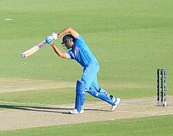

Rohit Gurunath Sharma (born 30 April 1987) is an Indian international cricketer and the former captain of the India national cricket team in all formats of the game.[3] He is a right-handed top-order batter. He represents Mumbai in domestic cricket and Mumbai Indians in the Indian Premier League. Sharma was a member of the teams that won the 2007 T20 World Cup, the 2013 ICC Champions Trophy and was the winning captain of the 2024 T20 World Cup and the 2025 ICC Champions Trophy. Sharma is acknowledged as one of the greatest opening batsmen of India in ODI format. Sharma holds several batting records which include most runs in T20 Internationals, most sixes in international cricket,[a] most double centuries in ODI cricket (3), most centuries at Cricket World Cups (7) and joint most hundreds in Twenty20 Internationals (5).[5] He also holds the world record for the highest individual score (264) in a One Day International (ODI) and also holds the record for scoring most hundreds (five) in a single Cricket World Cup, for which he won the ICC Men's ODI Cricketer of the Year award in 2019.[6] He is the first and only captain to lead a team in all[b] ICC tournament finals.[7] He formerly captained Mumbai Indians and the team has won five Indian Premier League titles in 2013, 2015, 2017, 2019 and 2020 under him, making him the most successful captain in IPL history, sharing this record with MS Dhoni. He is also one of two players who have played in every edition of the T20 World Cup, from the inaugural edition in 2007 till 2024.[c] He is the only Indian player to win two T20 World Cups. He became the second Indian captain to win a T20 World Cup. He has received three national honours, the Arjuna Award in 2015, the prestigiousKhel Ratna Award in 2020 by the Government of India, and the Padma Shri, India's fourth-highest civilian award, in 2026, for his immense, long standing contribution to Indian cricket, which notably includes guiding India to victory in the 2024 ICC Men's t20 world cup[8][9][10] and the 2025 Champions Trophy Under his captaincy, India won the 2018 Asia Cup and the 2023 Asia Cup, the seventh and eighth time the country won the title, both in ODI format as well as the 2018 Nidahas Trophy, their second overall and first in T20I format.
Sharma was born on 30 April 1987 into a Marathi-Telugu family in Bansod, Nagpur, Maharashtra, India. His mother, Purnima Sharma, is from Visakhapatnam, Andhra Pradesh. His father, Gurunath Sharma, worked as a caretaker of a transport firm storehouse. Sharma was raised by his grandparents and uncles in Borivali because of his father's low income. He would visit his parents, who lived in a single-room house in Dombivli, only during weekends.He has a younger brother, Vishal Sharma. Sharma joined a cricket camp in 1999 with his uncle's money. Dinesh Lad, his coach at the camp, asked him to change his school to Swami Vivekanand International School, where Lad was the coach and the cricket facilities were better than those at Sharma's old school. Sharma recollects, "I told him I couldn't afford it, but he got me a scholarship. So for four years I didn't pay a penny, and did well in my cricket".Sharma started as an off-spinner who could bat a bit before Lad noticed his batting ability and promoted him from number eight to open the innings. He excelled in the Harris and Giles Shield school cricket tournaments, scoring a century on debut as an opener
Sharma made his List A debut for West Zone against Central Zone in the Deodhar Trophy at Gwalior in March 2005. Batting at number eight, he scored 31 not out as West Zone won by 3 wickets with 24 balls remaining. Cheteshwar Pujara and Ravindra Jadeja made their debuts in the same match.[25] It was Sharma's unbeaten innings of 142 in 123 balls against North Zone at the Maharanna Bhupal College Ground in Udaipur in the same tournament that brought him into the limelight.[26] He visited Abu Dhabi and Australia with the India A squad and was then included among India's 30-member probable's list for the upcoming ICC Champions Trophy tournament, although he did not make the final squad.[27] Sharma made his first-class debut for India A against New Zealand A at Darwin in July 2006. He scored 57 and 22 as India won by 3 wickets.[28] He made his Ranji Trophy debut for Mumbai in the 2006–07 season and scored 205 off 267 balls against Gujarat.[29] Mumbai went on to win the tournament with Sharma scoring a half-century (57) in his second innings in the final against Bengal.[30] Sharma has spent his entire domestic first-class career at Mumbai. In December 2009, he made his highest career score of 309 not out in the Ranji Trophy against Gujarat.[31] In October 2013, upon the retirement of Ajit Agarkar, he was appointed team captain ahead of the 2013–14 season.

In March 2015, Sharma made his first appearance in the Cricket World Cup and played in eight matches for India in the 2015 tournament in Australia. India reached the semi-final stage where they were defeated by Australia. Sharma scored 330 runs in the tournament with one century, a score of 137 in the quarter-final against Bangladesh.[57] On 15 April 2019, Sharma was appointed vice-captain of India's squad for the 2019 World Cup in England.[58] In the opening match against South Africa, he scored 122, including his 12,000th run in international cricket.[59][60] He followed it up with centuries against Pakistan, England and Bangladesh. In the match against Sri Lanka, hitting yet another century, he became the first batsman to score five centuries in a single World Cup tournament,[61] and equalled Tendulkar's record for the most centuries (6) in all World Cup matches.[62] Sharma totalled 648 runs in the tournament to finish as the leading run-scorer and win the ICC's Golden Bat award, the third Indian player to do so.[63] On 8 October 2023, during the ICC Cricket World Cup, Sharma was entrusted with the captaincy responsibilities for the Indian team in the team's opening match against Australia in Chennai. This significant moment marked the first time he captained the Indian team in the Cricket World Cup. What set this particular event apart was that at that time, he had become the oldest player to lead the Indian team in the tournament,[64] showcasing his maturity and experience as a cricketer. On 11 October 2023, during a match against Afghanistan in the Cricket World Cup 2023, Sharma achieved a milestone by surpassing the Sachin Tendulkar's record for the most centuries in World Cup history. With a display of batting prowess, Sharma notched his seventh century, breaking the record in this World Cup encounte
Sharma scored the highest-ever individual score in a One Day International match, with a 264 against Sri Lanka at the Eden Gardens, Kolkata on 13 November 2014.[3] He is the only player to have scored three double-centuries in ODIs.In January 2020, Sharma was named as the ODI Player of the Year by the International Cricket Council (ICC). In 2019, Sharma became the only batsman to scored five centuries in a single edition of the Cricket World Cup. On 5 October 2019, during a Test match against South Africa, Sharma became the first batsman to score two centuries in a match on his first appearance as an opening batsman. In the same series, he broke Shimron Hetmyer's record for the highest number of sixes in a Test series. On 11 October 2023, Sharma achieved a historic feat during the 2023 Cricket World Cup match against Afghanistan team, when he surpassed the record previously held by Chris Gayle for the most international sixes. On 14 October 2023, Sharma achieved another milestone by becoming the first Indian to complete 300 sixes in the 50-overs format.This feat occurred during an India-Pakistan match at Narendra Modi Stadium, in front of more than 100,000 fans. During a 22 October 2023 match against New Zealand, Sharma became the first Indian batter to hit 50 One Day International (ODI) sixes in a calendar year. On 2 August 2024, Sharma surpassed Eoin Morgan to have hit most sixes in international cricket as captain. Sharma's 19 Player of the Match awards is the highest by an Indian in IPL history. On November 30, 2025, Rohit Sharma broke the record for most sixes in ODIs, A record previously held by Shahid Afridi. On June 23, 2026, Rohit Sharma received the Padma Shri Award in India, at Rashtrapati Bhavan in New Delhi. His name was initially announced on the eve of Republic Day earlier in the year. He was recognized for his immense, long-standing contribution to Indian cricket and his outstanding leadership, which notably includes guiding India to victory in the 2024 ICC T20 World Cup and the 2025 Champions Trophy.